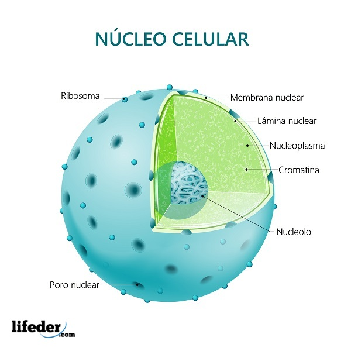
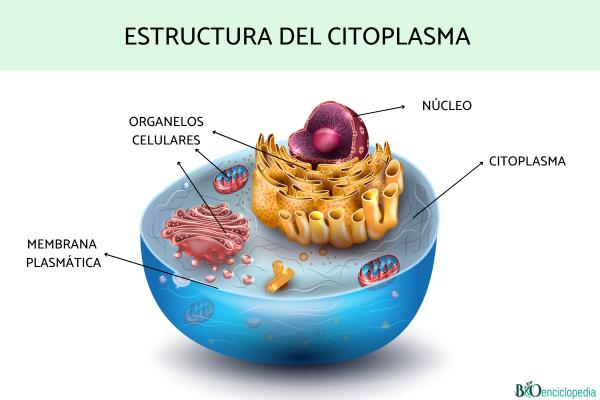

Núcleo
El núcleo es el organelo de mayor tamaño. Dirije el metabolismo y la división celular y contiene el material hereditario.
Se compone por la Membrana nuclear, Nucléolo, Cromatina y Nucleosoma

Citoplasma
Incluye todo el volumen de la célula y representa su medio interno, excepto eel nucleo. En él transitan sustancias, se realizan funciones y se encuentran todos los organelos celulares

Membrana celular o plasmática
Rodea y da forma a la célula, cuyo contenido iónico es muy diferente al del medio circundante.
Sus componentes Lipídos son los fosfolípidos, el colesterol y los glucolípidos